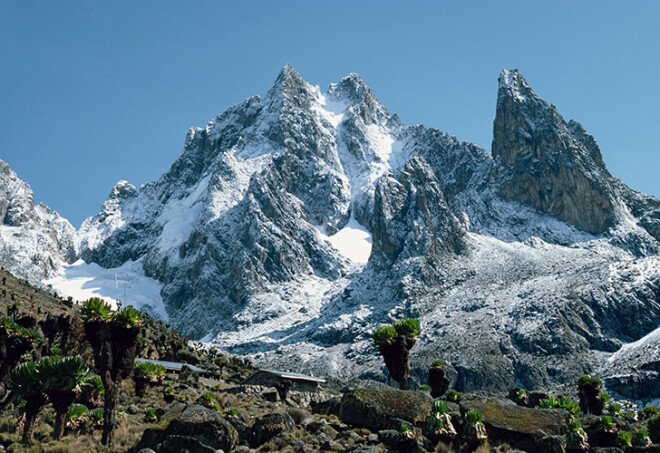
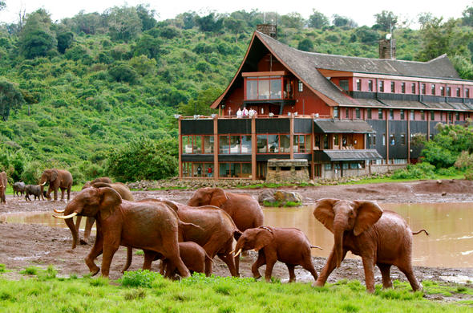
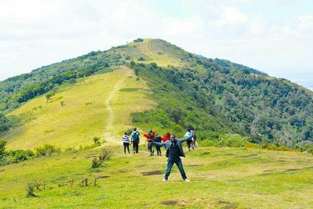
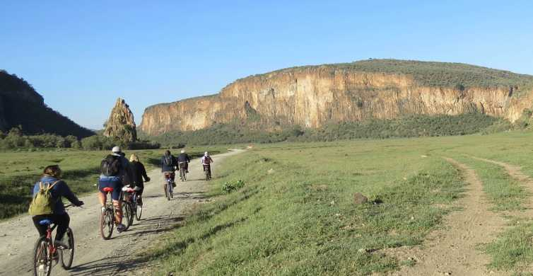
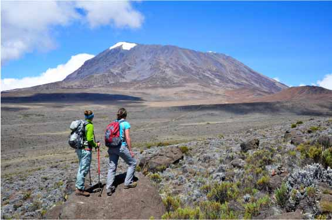

1. Mount Kenya: Africa's second-highest mountain offers a variety of hiking routes, ranging from gentle walks to challenging climbs. Point Lenana, at 4,985 meters (16,355 feet), is the most accessible summit for hikers without technical climbing experience.
2. Aberdare National Park: This scenic park is known for its lush forests, stunning waterfalls, and diverse wildlife. The Aberdare ranges offer several hiking trails, including the popular Aberdare Ranges Hiking Circuit.
3. Ngong Hills: Just a short drive from Nairobi, the Ngong Hills offer panoramic views of the Great Rift Valley and Nairobi city. The hiking trails wind through rolling hills, indigenous forests, and open grasslands, making it a popular destination for day hikes.
4. Hell's Gate National Park: Located near Lake Naivasha, Hell's Gate is famous for its dramatic landscape of towering cliffs, deep gorges, and hot springs. Hikers can explore the park on foot and enjoy breathtaking views of the Rift Valley.
5. Mount Longonot: This dormant stratovolcano in the Rift Valley is a popular hiking destination known for its challenging yet rewarding trails. Hikers can trek to the rim of the crater and enjoy stunning views of the surrounding landscape and Lake Naivasha.
